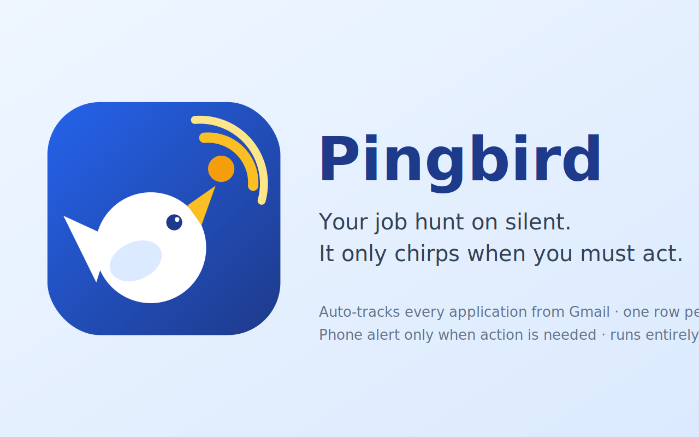

Pingbird — your job hunt on silent.
Pingbird is a free, open-source Google Sheets™ add-on that reads your Gmail, tracks every job application in one self-updating spreadsheet, and pings your phone only when you must act.

What Pingbird does
Pingbird is a Google Sheets add-on for people who are actively job hunting. Once you install it in your own Google account, it:
- Reads your Gmail to find job-application emails — acknowledgements, online assessments, interview invitations, offers, and rejections.
- Builds and maintains a Google Sheet for you, recording each application as a single, automatically-updated row so your tracker stays current without any manual data entry.
- Sends one silent, content-free notification to your phone only when an email actually needs your action, and stays completely quiet the rest of the time.
The purpose of Pingbird is to remove the tedious bookkeeping of a job search while making sure you never miss an email that needs a reply. It runs entirely inside your Google account — there is no Pingbird server and no Pingbird account.
Why it's different
The tracker maintains itself. Every job tracker asks you to log applications and move cards. Pingbird inverts it: acknowledgements, assessments, interviews, offers and rejections are read from Gmail and become one deduplicated row per application — matched by job ID, company + role, and email thread. Stages only move forward; recruiter name and email are captured automatically.
Silence by default. Noise is archived (only when hard-coded safety rules and the AI independently agree), action email stays pinned unread in your Inbox, and your phone receives one content-free ping: "open your Tracker." Nothing else, ever.
Private by architecture, not by promise. There is no server and no account. The entire product is one open-source Apps Script file running inside your Google account. Sanitized excerpts go only to the AI provider you configure with your own key. Read the full data-flow map.
What you need
A Google account, a free OpenRouter API key for AI classification, and the Pocket Alert app for phone notifications. Both stay within their free tiers in normal use.